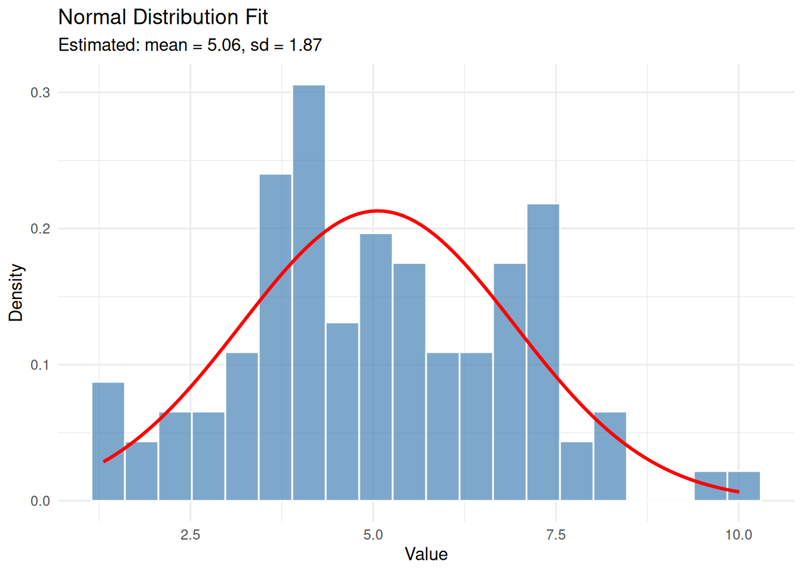
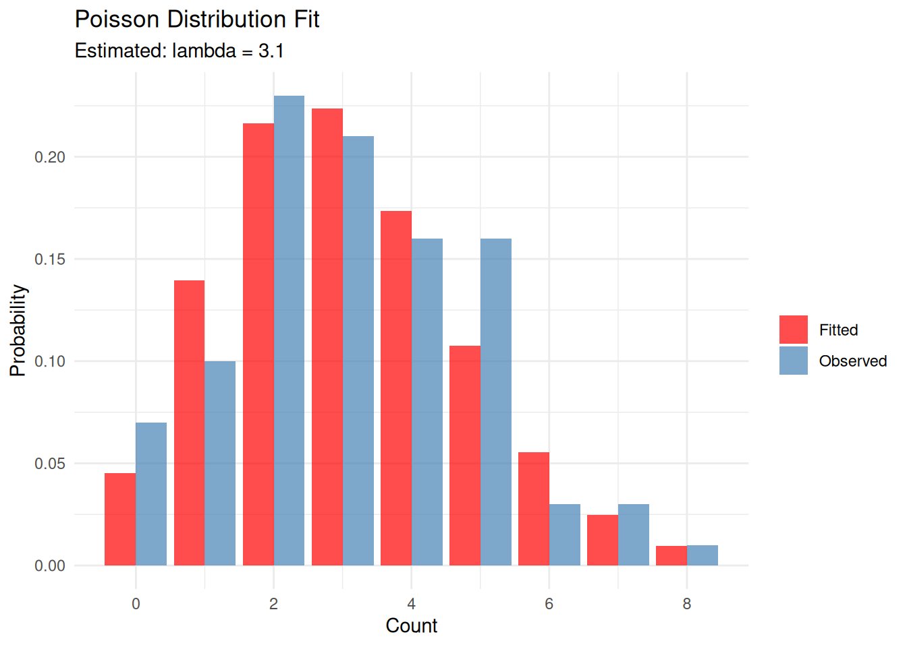
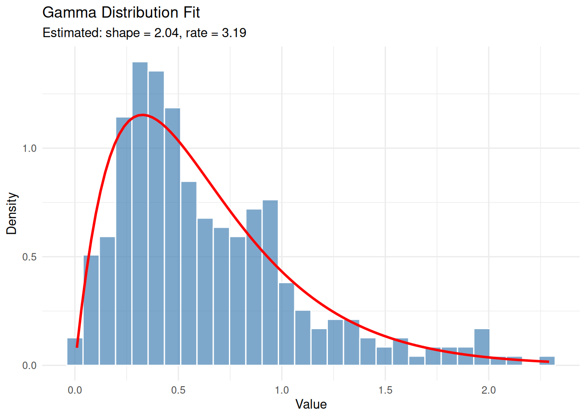
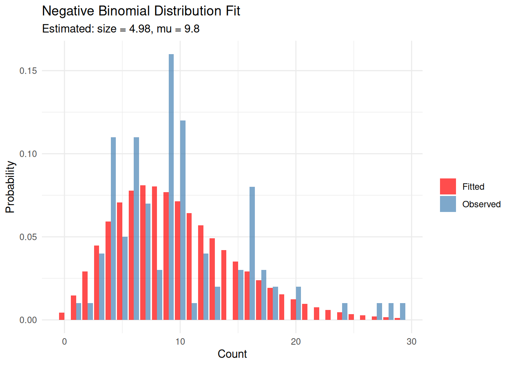
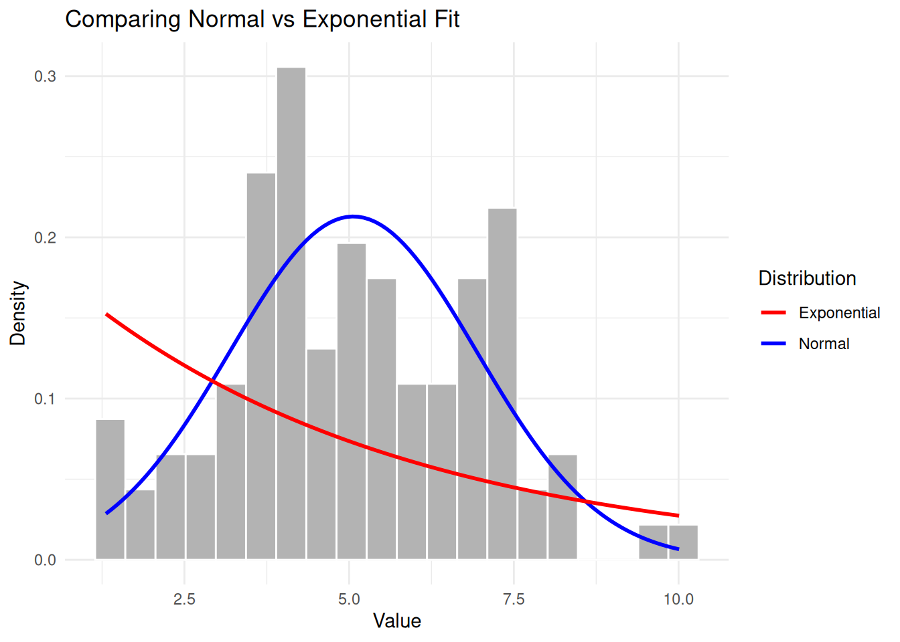
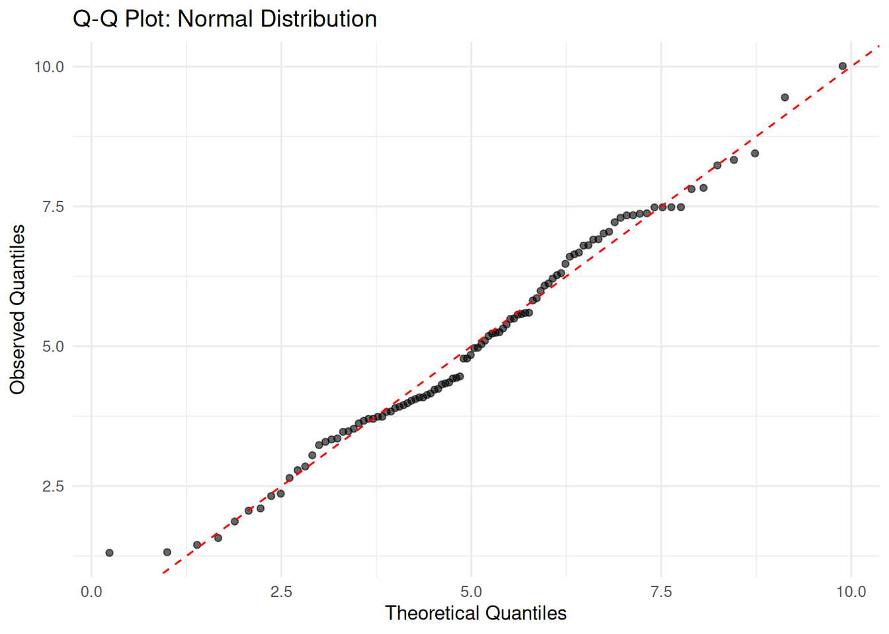

Last updated: 2026-02-04
Checks: 7 0
Knit directory: muse/
This reproducible R Markdown analysis was created with workflowr (version 1.7.1). The Checks tab describes the reproducibility checks that were applied when the results were created. The Past versions tab lists the development history.
Great! Since the R Markdown file has been committed to the Git repository, you know the exact version of the code that produced these results.
Great job! The global environment was empty. Objects defined in the global environment can affect the analysis in your R Markdown file in unknown ways. For reproduciblity it’s best to always run the code in an empty environment.
The command set.seed(20200712) was run prior to running
the code in the R Markdown file. Setting a seed ensures that any results
that rely on randomness, e.g. subsampling or permutations, are
reproducible.
Great job! Recording the operating system, R version, and package versions is critical for reproducibility.
Nice! There were no cached chunks for this analysis, so you can be confident that you successfully produced the results during this run.
Great job! Using relative paths to the files within your workflowr project makes it easier to run your code on other machines.
Great! You are using Git for version control. Tracking code development and connecting the code version to the results is critical for reproducibility.
The results in this page were generated with repository version 2a88aef. See the Past versions tab to see a history of the changes made to the R Markdown and HTML files.
Note that you need to be careful to ensure that all relevant files for
the analysis have been committed to Git prior to generating the results
(you can use wflow_publish or
wflow_git_commit). workflowr only checks the R Markdown
file, but you know if there are other scripts or data files that it
depends on. Below is the status of the Git repository when the results
were generated:
Ignored files:
Ignored: .Rproj.user/
Ignored: data/1M_neurons_filtered_gene_bc_matrices_h5.h5
Ignored: data/293t/
Ignored: data/293t_3t3_filtered_gene_bc_matrices.tar.gz
Ignored: data/293t_filtered_gene_bc_matrices.tar.gz
Ignored: data/5k_Human_Donor1_PBMC_3p_gem-x_5k_Human_Donor1_PBMC_3p_gem-x_count_sample_filtered_feature_bc_matrix.h5
Ignored: data/5k_Human_Donor2_PBMC_3p_gem-x_5k_Human_Donor2_PBMC_3p_gem-x_count_sample_filtered_feature_bc_matrix.h5
Ignored: data/5k_Human_Donor3_PBMC_3p_gem-x_5k_Human_Donor3_PBMC_3p_gem-x_count_sample_filtered_feature_bc_matrix.h5
Ignored: data/5k_Human_Donor4_PBMC_3p_gem-x_5k_Human_Donor4_PBMC_3p_gem-x_count_sample_filtered_feature_bc_matrix.h5
Ignored: data/97516b79-8d08-46a6-b329-5d0a25b0be98.h5ad
Ignored: data/Parent_SC3v3_Human_Glioblastoma_filtered_feature_bc_matrix.tar.gz
Ignored: data/brain_counts/
Ignored: data/cl.obo
Ignored: data/cl.owl
Ignored: data/jurkat/
Ignored: data/jurkat:293t_50:50_filtered_gene_bc_matrices.tar.gz
Ignored: data/jurkat_293t/
Ignored: data/jurkat_filtered_gene_bc_matrices.tar.gz
Ignored: data/pbmc20k/
Ignored: data/pbmc20k_seurat/
Ignored: data/pbmc3k.csv
Ignored: data/pbmc3k.csv.gz
Ignored: data/pbmc3k.h5ad
Ignored: data/pbmc3k/
Ignored: data/pbmc3k_bpcells_mat/
Ignored: data/pbmc3k_export.mtx
Ignored: data/pbmc3k_matrix.mtx
Ignored: data/pbmc3k_seurat.rds
Ignored: data/pbmc4k_filtered_gene_bc_matrices.tar.gz
Ignored: data/pbmc_1k_v3_filtered_feature_bc_matrix.h5
Ignored: data/pbmc_1k_v3_raw_feature_bc_matrix.h5
Ignored: data/refdata-gex-GRCh38-2020-A.tar.gz
Ignored: data/seurat_1m_neuron.rds
Ignored: data/t_3k_filtered_gene_bc_matrices.tar.gz
Ignored: r_packages_4.4.1/
Ignored: r_packages_4.5.0/
Untracked files:
Untracked: .claude/
Untracked: CLAUDE.md
Untracked: analysis/bioc.Rmd
Untracked: analysis/bioc_scrnaseq.Rmd
Untracked: analysis/chick_weight.Rmd
Untracked: analysis/likelihood.Rmd
Untracked: bpcells_matrix/
Untracked: data/Caenorhabditis_elegans.WBcel235.113.gtf.gz
Untracked: data/GCF_043380555.1-RS_2024_12_gene_ontology.gaf.gz
Untracked: data/SeuratObj.rds
Untracked: data/arab.rds
Untracked: data/astronomicalunit.csv
Untracked: data/femaleMiceWeights.csv
Untracked: data/lung_bcell.rds
Untracked: m3/
Untracked: women.json
Unstaged changes:
Modified: analysis/isoform_switch_analyzer.Rmd
Modified: analysis/linear_models.Rmd
Note that any generated files, e.g. HTML, png, CSS, etc., are not included in this status report because it is ok for generated content to have uncommitted changes.
These are the previous versions of the repository in which changes were
made to the R Markdown (analysis/fitting.Rmd) and HTML
(docs/fitting.html) files. If you’ve configured a remote
Git repository (see ?wflow_git_remote), click on the
hyperlinks in the table below to view the files as they were in that
past version.
| File | Version | Author | Date | Message |
|---|---|---|---|---|
| Rmd | 2a88aef | Dave Tang | 2026-02-04 | Add explanations on fitting |
| html | b2fed23 | Dave Tang | 2025-09-02 | Build site. |
| Rmd | 15473ba | Dave Tang | 2025-09-02 | Negative binomial |
| html | 161c3d6 | Dave Tang | 2025-09-02 | Build site. |
| Rmd | 3160792 | Dave Tang | 2025-09-02 | Gamma distribution |
| html | 779b385 | Dave Tang | 2025-09-02 | Build site. |
| Rmd | 5a74914 | Dave Tang | 2025-09-02 | Fitting a distribution |
When we say a “distribution was fit to” data, it means we assume the data comes from some probability distribution and we estimate the distribution’s parameters so the model best represents the observed values.
Distribution fitting is useful for:
The most common method for fitting distributions is Maximum Likelihood Estimation (MLE). The idea is to find parameter values that make the observed data most probable.
For example, if we have data and assume it comes from a normal distribution, MLE finds the mean (\(\mu\)) and standard deviation (\(\sigma\)) that maximise the likelihood of observing that data.
The likelihood function for n independent observations is:
\[L(\theta | x_1, ..., x_n) = \prod_{i=1}^{n} f(x_i | \theta)\]
where \(f\) is the probability density function and \(\theta\) represents the parameters. In practice, we maximise the log-likelihood for computational convenience.
The MASS::fitdistr() function fits univariate
distributions using maximum likelihood estimation. Let’s work through
several examples.
The normal (Gaussian) distribution is characterised by two parameters: mean (\(\mu\)) and standard deviation (\(\sigma\)).
set.seed(1984)
eg1 <- rnorm(100, mean = 5, sd = 2)Fit a normal distribution to the data:
eg1_fit <- fitdistr(eg1, "normal")
eg1_fit mean sd
5.062545 1.873380
(0.187338) (0.132468)The output shows:
The true parameters were mean = 5 and sd = 2. Our estimates are close, demonstrating that MLE recovers the true parameters reasonably well with 100 observations.
It’s important to visually verify that the fitted distribution matches the data:
ggplot(data.frame(x = eg1), aes(x)) +
geom_histogram(aes(y = after_stat(density)), bins = 20,
fill = "steelblue", colour = "white", alpha = 0.7) +
stat_function(fun = dnorm,
args = list(mean = eg1_fit$estimate['mean'],
sd = eg1_fit$estimate['sd']),
colour = "red", linewidth = 1) +
labs(title = "Normal Distribution Fit",
subtitle = paste0("Estimated: mean = ", round(eg1_fit$estimate['mean'], 2),
", sd = ", round(eg1_fit$estimate['sd'], 2)),
x = "Value", y = "Density") +
theme_minimal()
The red curve shows the fitted normal distribution overlaid on the histogram of our data.
The Poisson distribution models count data and has a single parameter \(\lambda\) (lambda), which represents both the mean and variance.
set.seed(1984)
eg2 <- rpois(100, lambda = 3)
eg2_fit <- fitdistr(eg2, "Poisson")
eg2_fit lambda
3.1000000
(0.1760682)The estimated \(\lambda\) = 3.1 is close to the true value of 3.
# Create comparison data
x_vals <- 0:max(eg2)
observed <- table(factor(eg2, levels = x_vals)) / length(eg2)
expected <- dpois(x_vals, lambda = eg2_fit$estimate['lambda'])
plot_data <- data.frame(
x = rep(x_vals, 2),
probability = c(as.numeric(observed), expected),
type = rep(c("Observed", "Fitted"), each = length(x_vals))
)
ggplot(plot_data, aes(x, probability, fill = type)) +
geom_bar(stat = "identity", position = "dodge", alpha = 0.7) +
scale_fill_manual(values = c("Observed" = "steelblue", "Fitted" = "red")) +
labs(title = "Poisson Distribution Fit",
subtitle = paste0("Estimated: lambda = ", round(eg2_fit$estimate['lambda'], 2)),
x = "Count", y = "Probability", fill = "") +
theme_minimal()
The gamma distribution is useful for modelling positive continuous data, such as waiting times or rainfall amounts. It has two parameters: shape (\(\alpha\)) and rate (\(\beta\)).
set.seed(1984)
eg3 <- rgamma(300, shape = 2, rate = 3)
eg3_fit <- fitdistr(eg3, "gamma")Warning in densfun(x, parm[1], parm[2], ...): NaNs producedeg3_fit shape rate
2.0425966 3.1910159
(0.1550892) (0.2744437)True parameters: shape = 2, rate = 3. The estimates are reasonably close.
ggplot(data.frame(x = eg3), aes(x)) +
geom_histogram(aes(y = after_stat(density)), bins = 30,
fill = "steelblue", colour = "white", alpha = 0.7) +
stat_function(fun = dgamma,
args = list(shape = eg3_fit$estimate['shape'],
rate = eg3_fit$estimate['rate']),
colour = "red", linewidth = 1) +
labs(title = "Gamma Distribution Fit",
subtitle = paste0("Estimated: shape = ", round(eg3_fit$estimate['shape'], 2),
", rate = ", round(eg3_fit$estimate['rate'], 2)),
x = "Value", y = "Density") +
theme_minimal()
The negative binomial distribution is useful for overdispersed count data (when variance exceeds the mean). It has two parameters: size (\(r\)) and mu (\(\mu\)).
set.seed(1984)
eg4 <- rnbinom(100, mu = 10, size = 5)
eg4_fit <- fitdistr(eg4, "negative binomial")
eg4_fit size mu
4.9764745 9.7999979
(1.0492499) (0.5394329)x_vals <- 0:max(eg4)
observed <- table(factor(eg4, levels = x_vals)) / length(eg4)
expected <- dnbinom(x_vals, mu = eg4_fit$estimate['mu'], size = eg4_fit$estimate['size'])
plot_data <- data.frame(
x = rep(x_vals, 2),
probability = c(as.numeric(observed), expected),
type = rep(c("Observed", "Fitted"), each = length(x_vals))
)
ggplot(plot_data, aes(x, probability, fill = type)) +
geom_bar(stat = "identity", position = "dodge", alpha = 0.7) +
scale_fill_manual(values = c("Observed" = "steelblue", "Fitted" = "red")) +
labs(title = "Negative Binomial Distribution Fit",
subtitle = paste0("Estimated: size = ", round(eg4_fit$estimate['size'], 2),
", mu = ", round(eg4_fit$estimate['mu'], 2)),
x = "Count", y = "Probability", fill = "") +
theme_minimal()
MASS::fitdistr() supports the following
distributions:
When multiple distributions could plausibly fit your data, you need methods to compare them.
The Akaike Information Criterion (AIC) measures how well a model fits the data while penalising model complexity:
\[AIC = 2k - 2\ln(L)\]
where \(k\) is the number of parameters and \(L\) is the maximum likelihood. Lower AIC values indicate better fit. The penalty term (2k) prevents overfitting by discouraging unnecessarily complex models.
Let’s compare normal and exponential fits for our normally distributed data:
set.seed(1984)
eg1 <- rnorm(100, mean = 5, sd = 2)
eg1_norm <- fitdistr(eg1, "normal")
eg1_exp <- fitdistr(eg1, "exponential")
AIC(eg1_norm, eg1_exp) df AIC
eg1_norm 2 413.3365
eg1_exp 1 526.3739The normal distribution has a much lower AIC, correctly indicating it’s a better fit. We can also visualise why:
ggplot(data.frame(x = eg1), aes(x)) +
geom_histogram(aes(y = after_stat(density)), bins = 20,
fill = "grey70", colour = "white") +
stat_function(fun = dnorm,
args = list(mean = eg1_norm$estimate['mean'],
sd = eg1_norm$estimate['sd']),
aes(colour = "Normal"), linewidth = 1) +
stat_function(fun = dexp,
args = list(rate = eg1_exp$estimate['rate']),
aes(colour = "Exponential"), linewidth = 1) +
scale_colour_manual(values = c("Normal" = "blue", "Exponential" = "red")) +
labs(title = "Comparing Normal vs Exponential Fit",
x = "Value", y = "Density", colour = "Distribution") +
theme_minimal()
The exponential distribution clearly doesn’t capture the symmetric, bell-shaped nature of the data.
BIC is similar to AIC but applies a stronger penalty for model complexity:
\[BIC = k\ln(n) - 2\ln(L)\]
where \(n\) is the sample size. BIC tends to favour simpler models than AIC.
BIC(eg1_norm, eg1_exp) df BIC
eg1_norm 2 418.5469
eg1_exp 1 528.9791Both criteria agree that the normal distribution is the better fit.
Beyond comparing models, you should assess whether any distribution fits well in absolute terms.
Quantile-Quantile (Q-Q) plots compare the quantiles of your data against theoretical quantiles. If the data follows the assumed distribution, points should fall along the diagonal line.
# Q-Q plot for normal fit
eg1_sorted <- sort(eg1)
theoretical_quantiles <- qnorm(ppoints(length(eg1)),
mean = eg1_fit$estimate['mean'],
sd = eg1_fit$estimate['sd'])
ggplot(data.frame(theoretical = theoretical_quantiles, observed = eg1_sorted),
aes(theoretical, observed)) +
geom_point(alpha = 0.6) +
geom_abline(slope = 1, intercept = 0, colour = "red", linetype = "dashed") +
labs(title = "Q-Q Plot: Normal Distribution",
x = "Theoretical Quantiles", y = "Observed Quantiles") +
theme_minimal()
Points closely following the diagonal line indicate a good fit.
The Kolmogorov-Smirnov test formally tests whether data comes from a specified distribution:
ks.test(eg1, "pnorm",
mean = eg1_fit$estimate['mean'],
sd = eg1_fit$estimate['sd'])
Asymptotic one-sample Kolmogorov-Smirnov test
data: eg1
D = 0.086058, p-value = 0.4494
alternative hypothesis: two-sidedA large p-value (> 0.05) suggests we cannot reject the hypothesis that the data comes from the fitted distribution.
Larger samples produce more reliable parameter estimates:
set.seed(1984)
true_mean <- 10
true_sd <- 3
# Compare estimates at different sample sizes
sample_sizes <- c(20, 50, 100, 500, 1000)
results <- lapply(sample_sizes, function(n) {
x <- rnorm(n, mean = true_mean, sd = true_sd)
fit <- fitdistr(x, "normal")
data.frame(
n = n,
est_mean = fit$estimate['mean'],
est_sd = fit$estimate['sd'],
se_mean = fit$sd['mean'],
se_sd = fit$sd['sd']
)
})
results_df <- do.call(rbind, results)
results_df n est_mean est_sd se_mean se_sd
mean 20 10.382167 3.026534 0.67675348 0.47853697
mean1 50 10.226157 2.746529 0.38841779 0.27465285
mean2 100 9.604006 2.743902 0.27439024 0.19402320
mean3 500 9.804773 3.020142 0.13506485 0.09550527
mean4 1000 9.954271 3.011147 0.09522084 0.06733130Notice how standard errors decrease as sample size increases.
For some distributions, fitdistr() may need starting
values to converge:
set.seed(1984)
weibull_data <- rweibull(100, shape = 2, scale = 5)
# Provide starting values for Weibull
weibull_fit <- fitdistr(weibull_data, "weibull",
start = list(shape = 1, scale = 1))Warning in densfun(x, parm[1], parm[2], ...): NaNs produced
Warning in densfun(x, parm[1], parm[2], ...): NaNs produced
Warning in densfun(x, parm[1], parm[2], ...): NaNs produced
Warning in densfun(x, parm[1], parm[2], ...): NaNs producedweibull_fit shape scale
1.8967375 4.8896060
(0.1458478) (0.2720805)The fitted object contains useful information:
# Parameter estimates
eg1_fit$estimate mean sd
5.062545 1.873380 # Standard errors
eg1_fit$sd mean sd
0.187338 0.132468 # Log-likelihood
eg1_fit$loglik[1] -204.6683# Variance-covariance matrix
eg1_fit$vcov mean sd
mean 0.03509552 0.00000000
sd 0.00000000 0.01754776Key points for distribution fitting:
sessionInfo()R version 4.5.0 (2025-04-11)
Platform: x86_64-pc-linux-gnu
Running under: Ubuntu 24.04.3 LTS
Matrix products: default
BLAS: /usr/lib/x86_64-linux-gnu/openblas-pthread/libblas.so.3
LAPACK: /usr/lib/x86_64-linux-gnu/openblas-pthread/libopenblasp-r0.3.26.so; LAPACK version 3.12.0
locale:
[1] LC_CTYPE=en_US.UTF-8 LC_NUMERIC=C
[3] LC_TIME=en_US.UTF-8 LC_COLLATE=en_US.UTF-8
[5] LC_MONETARY=en_US.UTF-8 LC_MESSAGES=en_US.UTF-8
[7] LC_PAPER=en_US.UTF-8 LC_NAME=C
[9] LC_ADDRESS=C LC_TELEPHONE=C
[11] LC_MEASUREMENT=en_US.UTF-8 LC_IDENTIFICATION=C
time zone: Etc/UTC
tzcode source: system (glibc)
attached base packages:
[1] stats graphics grDevices utils datasets methods base
other attached packages:
[1] ggplot2_3.5.2 MASS_7.3-65 workflowr_1.7.1
loaded via a namespace (and not attached):
[1] gtable_0.3.6 jsonlite_2.0.0 dplyr_1.1.4 compiler_4.5.0
[5] promises_1.3.3 tidyselect_1.2.1 Rcpp_1.0.14 stringr_1.5.1
[9] git2r_0.36.2 callr_3.7.6 later_1.4.2 jquerylib_0.1.4
[13] scales_1.4.0 yaml_2.3.10 fastmap_1.2.0 R6_2.6.1
[17] labeling_0.4.3 generics_0.1.4 knitr_1.50 tibble_3.3.0
[21] rprojroot_2.0.4 RColorBrewer_1.1-3 bslib_0.9.0 pillar_1.10.2
[25] rlang_1.1.6 cachem_1.1.0 stringi_1.8.7 httpuv_1.6.16
[29] xfun_0.52 getPass_0.2-4 fs_1.6.6 sass_0.4.10
[33] cli_3.6.5 withr_3.0.2 magrittr_2.0.3 ps_1.9.1
[37] digest_0.6.37 grid_4.5.0 processx_3.8.6 rstudioapi_0.17.1
[41] lifecycle_1.0.4 vctrs_0.6.5 evaluate_1.0.3 glue_1.8.0
[45] farver_2.1.2 whisker_0.4.1 rmarkdown_2.29 httr_1.4.7
[49] tools_4.5.0 pkgconfig_2.0.3 htmltools_0.5.8.1